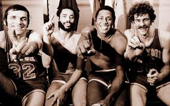
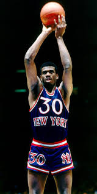
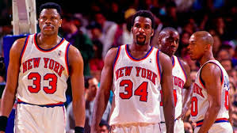

My name is Afiz Raji, Im born an raise in NYC, specifally raise in
queens I came to the front end world a few months ago by my cousin,
a software enginner. when he show me how much cool things you can
do with making a website I was intrigue an wanted to learn more,but I
also knew, it would a challenge because I knew Iwas not familiar with
the coding lanaguage but Iknew just wanted to learn and be patient. Its
really not in it for the money but Im doing because it something I enjoy
doing and just want to get better at my craft. Then i bump into NYCDA
online and Ifelt this was the perfect place for me to build my craft,
an grow with beginners web developer.
I Been a beloved knicks fans since i was 6 years old and will be till I die but there is a
lot of pain being a beloved knicks fan season after season of losing,but I will always have faith
and never give up on the knicks. Will soon win another championship, just we NEW
YORKERS just have to more patient even though we been patient from sometime now ! (lol)
|  |  |
|  |